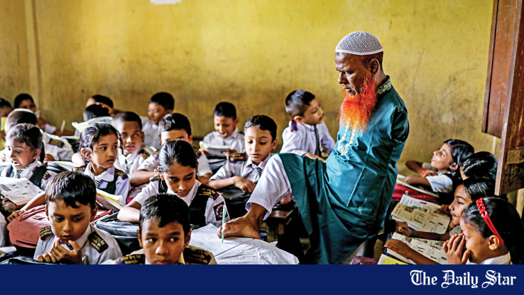

Dead-end jobs, meagre pay for makers of nation-builders
Despite their pivotal role in shaping future generations, government primary schoolteachers remain among the lowest-paid staffers, a disparity that many educators say is reflected in the level of respect they receive.